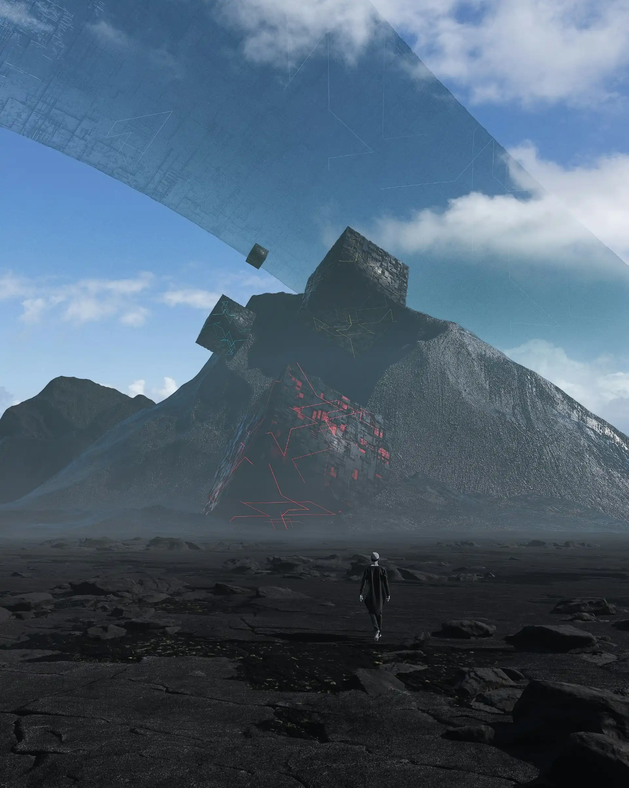
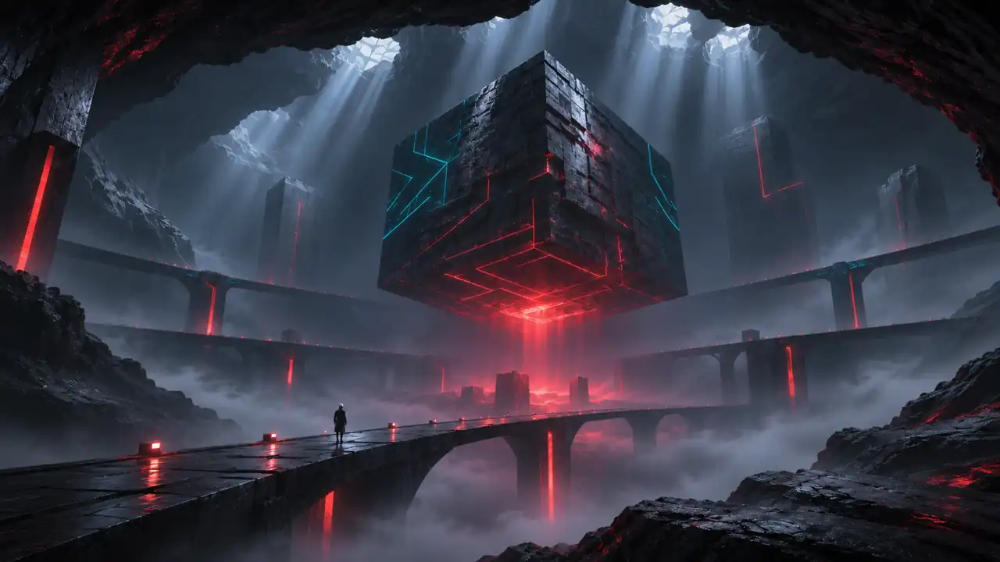
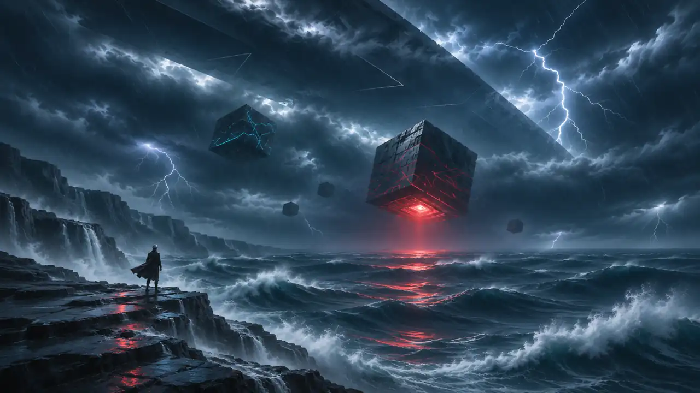
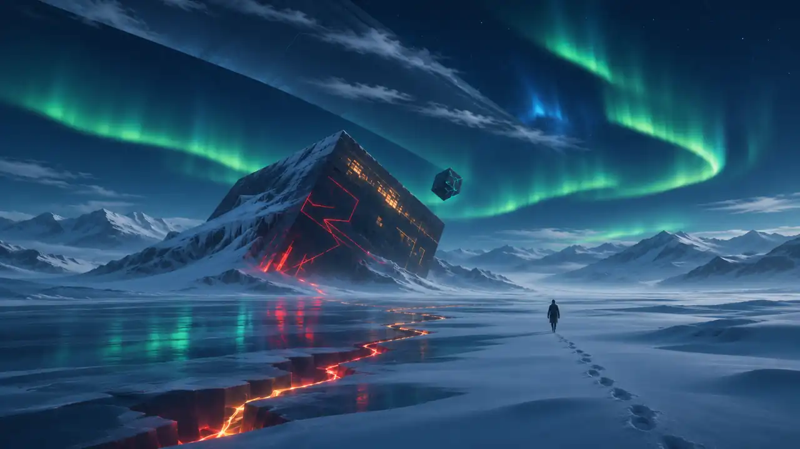

Arte digital · Paisajes especulativos
Otros mundos nos esperan.
Paisajes imposibles, arquitecturas olvidadas y una luz que atraviesa el silencio. Bienvenidos al universo visual de Nébula.
Explorar la galería
01 / Portfolio
Fragmentos de otros mundos
Tres escenarios, una misma expedición.

El santuario suspendido

Las mareas del vacío

Aurora sobre el hielo
02 / Audiovisual
Un universo que respira
Una presentación de 12 segundos y una atmósfera sonora independiente.
Sonido / Espacio
Frecuencias del vacío
03 / Conectar
¿Te gustaría descubrir un mundo nuevo?
Colaboraciones, proyectos visuales e ideas que todavía no tienen forma: todas las historias empiezan con una conversación.